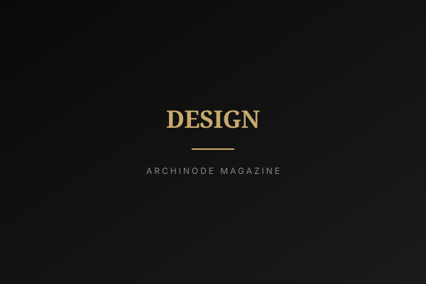

<!DOCTYPE html>
<html lang="ko">
<head>
<meta charset="UTF-8">
<meta name="viewport" content="width=device-width, initial-scale=1.0">
<title>빛의 상자가 여의도에 열렸다 — 퐁피두센터 한화 개관 | ARCHINODE Magazine</title>
<meta name="description" content="63빌딩 수족관 자리에 퐁피두센터 한화가 문을 열었다. 금융 1번지에 들어선 미술관이 도시와 시민의 일상에 무엇을 바꾸는지 짚는다.">
<meta property="og:title" content="빛의 상자가 여의도에 열렸다 — 퐁피두센터 한화 개관">
<meta property="og:image" content="../assets/magazine/placeholders/architecture.svg">
<link rel="icon" type="image/x-icon" href="../favicon.ico">
<link rel="preconnect" href="https://fonts.googleapis.com">
<link rel="preconnect" href="https://fonts.gstatic.com" crossorigin>
<link href="https://fonts.googleapis.com/css2?family=Inter:wght@300;400;500;600;700;800;900&family=Noto+Sans+KR:wght@300;400;500;700;900&display=swap" rel="stylesheet">
<link rel="stylesheet" href="https://cdnjs.cloudflare.com/ajax/libs/font-awesome/6.5.1/css/all.min.css">
<link rel="stylesheet" href="../style.css">
<style>
.article-hero { position: relative; padding: 140px 24px 80px; text-align: center; background-image: linear-gradient(rgba(10,10,10,0.6), rgba(10,10,10,0.78)), url('../assets/magazine/placeholders/architecture.svg"announcement-bar"><span data-en="2026 Brand Listing —" data-ko="2026 브랜드 입점 —">2026 Brand Listing —</span> <strong data-en="Now Free" data-ko="무료">Now Free</strong> &nbsp;|&nbsp; <span data-en="List your brand on ARCHINODE at no cost." data-ko="ARCHINODE에 무료로 브랜드를 등록하세요.">List your brand on ARCHINODE at no cost.</span> <a href="../list-your-brand.html" data-en="Learn more →" data-ko="자세히 보기 →">Learn more &rarr;</a></div>
<header class="header" id="header"><div class="container"><a href="../index.html" class="logo">ARCHINODE <span class="logo-sub">건축을 잇다</span></a><nav class="main-nav" id="mainNav"><div class="nav-dropdown"><button class="nav-dropdown-trigger" onclick="toggleCatMenu()" data-en="Categories" data-ko="카테고리">Categories <i class="fas fa-chevron-down"></i></button><div class="nav-dropdown-menu" id="catMenu"><a href="../categories/furniture.html"><span>Furniture</span><small>가구</small></a><a href="../categories/bathroom.html"><span>Bathroom</span><small>욕실</small></a><a href="../categories/outdoor.html"><span>Outdoor</span><small>아웃도어</small></a><a href="../categories/lighting.html"><span>Lighting</span><small>조명</small></a><a href="../categories/kitchen.html"><span>Kitchen</span><small>주방</small></a><a href="../categories/office.html"><span>Office</span><small>오피스</small></a><a href="../categories/finishes.html"><span>Finishes</span><small>마감재</small></a><a href="../categories/wellness.html"><span>Wellness</span><small>웰니스</small></a><a href="../categories/decor.html"><span>Decor</span><small>데코</small></a><a href="../categories/construction.html"><span>Construction</span><small>건축자재</small></a></div></div><a href="../brands.html" data-en="Brands" data-ko="브랜드">Brands</a><a href="../trend-report.html" data-en="Brand Magazine" data-ko="브랜드 매거진">Brand Magazine</a><a href="../magazine.html" data-en="Magazine" data-ko="매거진" style="color:var(--black);font-weight:600;">Magazine</a><a href="../about.html" data-en="About" data-ko="소개">About</a><a href="../list-your-brand.html" class="nav-cta" data-en="List Your Brand" data-ko="브랜드 입점">List Your Brand</a></nav><div class="header-actions"><a href="../brand-portal/login.html" style="font-size:0.82rem;color:#C8A96E;font-weight:600;" data-en="Brand Login" data-ko="브랜드 로그인">Brand Login</a><button class="search-toggle" onclick="toggleSearch()" aria-label="Search"><i class="fas fa-search"></i></button><a href="../auth/profile.html" aria-label="Saved"><i class="far fa-bookmark"></i></a><a href="#" class="lang-switch" onclick="toggleLang(event)">KR / EN</a><button class="mobile-toggle" onclick="toggleMobile()" aria-label="Menu"><i class="fas fa-bars"></i></button></div></div></header>
<div class="search-overlay" id="searchOverlay"><span class="search-close" onclick="toggleSearch()">&times;</span><div class="search-box"><input type="text" placeholder="Search brands, products, designers..." data-en-placeholder="Search brands, products, designers..." data-ko-placeholder="브랜드, 제품, 디자이너 검색..."><button><i class="fas fa-arrow-right"></i></button></div></div>
<section class="article-hero">
    <span class="tag" data-en="Culture" data-ko="문화">Culture</span>
    <h1 data-en="A Box of Light Opens in Yeouido" data-ko="빛의 상자가 여의도에 열렸다">빛의 상자가 여의도에 열렸다</h1>
    <p class="subtitle" data-en="Centre Pompidou Hanwha opens where the 63 Building&apos;s aquarium once stood — and rewrites the schedule of Korea&apos;s financial district." data-ko="63빌딩 수족관 자리에 들어선 퐁피두센터 한화, 금융가의 시간표를 바꾸다.">63빌딩 수족관 자리에 들어선 퐁피두센터 한화, 금융가의 시간표를 바꾸다.</p>
    <div class="meta">2026-06-08 <span>·</span> ARCHINODE Editorial</div>
</section>
<article class="article-body">
<p class="lead" data-en="On June 4, 2026 — the 140th anniversary of diplomatic ties between France and Korea — Centre Pompidou Hanwha opened to the public inside the base of Seoul&apos;s 63 Building. Designed by architect Jean-Michel Wilmotte as a &apos;box of light&apos;, the museum is not just another exhibition hall. Planted in the heart of Yeouido&apos;s financial district, it asks a quiet question: what changes when a global museum moves into a place built for work?" data-ko="2026년 6월 4일, 한불 수교 140주년에 맞춰 퐁피두센터 한화가 서울 63빌딩 저층부에서 일반에 문을 열었다. 건축가 장미셸 윌모트가 &apos;빛의 상자&apos;로 설계한 이 미술관은 단순한 전시 공간이 아니다. 여의도 금융가 한복판에 자리 잡은 이 건물은 조용히 묻는다 — 일하기 위해 지어진 동네에 미술관이 들어오면 무엇이 달라지는가.">2026년 6월 4일, 한불 수교 140주년에 맞춰 퐁피두센터 한화가 서울 63빌딩 저층부에서 일반에 문을 열었다. 건축가 장미셸 윌모트가 '빛의 상자'로 설계한 이 미술관은 단순한 전시 공간이 아니다. 여의도 금융가 한복판에 자리 잡은 이 건물은 조용히 묻는다 — 일하기 위해 지어진 동네에 미술관이 들어오면 무엇이 달라지는가.</p>
<h2 data-en="From Aquarium to Museum" data-ko="수족관이 미술관이 되기까지">수족관이 미술관이 되기까지</h2>
<p data-en="Anyone who remembers the lower floors of the 63 Building will recall that the space was an aquarium for a long time — the place you took a child by the hand to see sharks and seals. That dim hall of water tanks has now become a museum where light moves freely. More than 10,000 square metres over four levels, redesigned so daylight reaches deep into the building and, after dark, the building returns that light to the city. The existing structure was not demolished but transformed; the memory of the place is preserved inside its new skin." data-ko="63빌딩 저층부를 기억하는 사람이라면, 그곳이 오랫동안 수족관이었다는 사실을 떠올릴 것이다. 아이 손을 잡고 상어와 물범을 보러 가던 자리. 그 어둑한 수조의 공간이 이제 빛이 드나드는 미술관으로 바뀌었다. 4개 층, 1만㎡가 넘는 규모로, 낮에는 건물 깊숙이 자연광을 끌어들이고 밤에는 그 빛을 도시로 되돌려주도록 다시 설계됐다. 기존 구조물을 철거하지 않고 변형한 덕에, 장소의 기억이 새 외피 안에 그대로 보존됐다.">63빌딩 저층부를 기억하는 사람이라면, 그곳이 오랫동안 수족관이었다는 사실을 떠올릴 것이다. 아이 손을 잡고 상어와 물범을 보러 가던 자리. 그 어둑한 수조의 공간이 이제 빛이 드나드는 미술관으로 바뀌었다. 4개 층, 1만㎡가 넘는 규모로, 낮에는 건물 깊숙이 자연광을 끌어들이고 밤에는 그 빛을 도시로 되돌려주도록 다시 설계됐다. 기존 구조물을 철거하지 않고 변형한 덕에, 장소의 기억이 새 외피 안에 그대로 보존됐다.</p>
<figure><figcaption data-en="By day it pulls in the light of the Han River; by night it returns the light to the city (Image: Unsplash)" data-ko="낮에는 한강의 빛을 끌어들이고, 밤에는 그 빛을 도시로 되돌려준다 (이미지: Unsplash)">낮에는 한강의 빛을 끌어들이고, 밤에는 그 빛을 도시로 되돌려준다 (이미지: Unsplash)</figcaption></figure>
<p data-en="What matters most is the address. Museums usually rise in cultural districts or along quiet riverbanks. Centre Pompidou Hanwha instead sits in the middle of Korea&apos;s financial district, surrounded by securities firms and asset managers. Picture someone in a dress shirt seeing a Cubist exhibition over lunch and walking back to the office. When a museum becomes &apos;the place you drop by on the way home&apos; rather than &apos;the place you make a special trip to&apos;, the very rhythm of a neighbourhood shifts." data-ko="가장 주목할 것은 위치다. 미술관은 보통 도심의 문화지구나 한적한 강변에 선다. 그러나 퐁피두 한화는 증권사와 자산운용사가 빼곡한 금융 1번지 한복판에 자리 잡았다. 점심시간에 셔츠 차림으로 큐비즘 전시를 보고 사무실로 돌아가는 풍경을 떠올려보라. 미술관이 &apos;특별한 날 작정하고 가는 곳&apos;이 아니라 &apos;퇴근길에 들르는 곳&apos;이 될 때, 여의도라는 동네의 시간표 자체가 달라진다.">가장 주목할 것은 위치다. 미술관은 보통 도심의 문화지구나 한적한 강변에 선다. 그러나 퐁피두 한화는 증권사와 자산운용사가 빼곡한 금융 1번지 한복판에 자리 잡았다. 점심시간에 셔츠 차림으로 큐비즘 전시를 보고 사무실로 돌아가는 풍경을 떠올려보라. 미술관이 '특별한 날 작정하고 가는 곳'이 아니라 '퇴근길에 들르는 곳'이 될 때, 여의도라는 동네의 시간표 자체가 달라진다.</p>
<blockquote data-en="&quot;When a museum becomes the place you drop by on the way home, the working island of Yeouido turns into an island where people linger.&quot;" data-ko="&quot;미술관이 퇴근길에 들르는 곳이 되는 순간, 여의도는 일하는 섬에서 머무는 섬으로 바뀐다.&quot;">"미술관이 퇴근길에 들르는 곳이 되는 순간, 여의도는 일하는 섬에서 머무는 섬으로 바뀐다."</blockquote>
<h2 data-en="When a Museum Becomes a City&apos;s Brand" data-ko="미술관은 왜 도시 브랜드가 되었나">미술관은 왜 도시 브랜드가 되었나</h2>
<p data-en="The &apos;export&apos; of a museum&apos;s name is not new — it is a structural trend more than two decades old. Pompidou opened in Metz (2010), Málaga (2015) and Shanghai (2019) before choosing Seoul. Guggenheim went to Bilbao and Abu Dhabi; the Louvre to Abu Dhabi. Behind all of them lies one idea: a museum is urban branding infrastructure. The &apos;Bilbao effect&apos;, which turned a declining industrial city into a tourist destination, became the textbook for every satellite strategy." data-ko="미술관의 &apos;이름 수출&apos;은 새롭지 않다. 20년 넘게 이어진 구조적 흐름이다. 퐁피두는 2010년 메스(프랑스), 2015년 말라가(스페인), 2019년 상하이에 이어 서울을 택했다. 구겐하임은 빌바오·아부다비로, 루브르는 아부다비로 갔다. 그 모든 전략의 바탕에는 하나의 인식이 있다 — 미술관은 곧 도시 브랜딩 인프라라는 것. 쇠락한 공업도시를 관광도시로 되살린 &apos;빌바오 효과&apos;가 모든 분관 전략의 교본이 됐다.">미술관의 '이름 수출'은 새롭지 않다. 20년 넘게 이어진 구조적 흐름이다. 퐁피두는 2010년 메스(프랑스), 2015년 말라가(스페인), 2019년 상하이에 이어 서울을 택했다. 구겐하임은 빌바오·아부다비로, 루브르는 아부다비로 갔다. 그 모든 전략의 바탕에는 하나의 인식이 있다 — 미술관은 곧 도시 브랜딩 인프라라는 것. 쇠락한 공업도시를 관광도시로 되살린 '빌바오 효과'가 모든 분관 전략의 교본이 됐다.</p>
<p data-en="Seoul&apos;s version is distinctive on two counts. First, it chose regeneration over new construction — recycling a familiar landmark, the 63 Building aquarium, rather than raising a new structure on reclaimed land as in Abu Dhabi. Second, it runs on a four-year partnership signed in 2023, closer to a &apos;licence model&apos; than a permanent branch. Together with Hong Kong&apos;s M+ and Tokyo&apos;s string of foreign-brand tie-ups, it confirms that Asia has become the new battleground for global cultural capital. Over the next three years, expect Seoul to push harder to position itself as &apos;the Paris of Asia&apos;s art market&apos;." data-ko="서울 사례가 독특한 점은 두 가지다. 첫째, 신축이 아니라 63빌딩 수족관이라는 익숙한 랜드마크의 &apos;재생&apos;을 택했다. 아부다비처럼 매립지에 새 건물을 올리는 방식과 정반대다. 둘째, 2023년 체결한 4년 한시 파트너십으로 운영된다는 점에서 영구 분관보다 가벼운 &apos;라이선스형&apos; 모델에 가깝다. 홍콩 M+, 도쿄의 잇따른 해외 브랜드 유치와 함께, 아시아가 글로벌 문화자본의 새 격전지가 됐음을 보여준다. 향후 3년, 서울이 &apos;아시아 미술 시장의 파리&apos;로 자리매김하려는 시도가 본격화될 것이다.">서울 사례가 독특한 점은 두 가지다. 첫째, 신축이 아니라 63빌딩 수족관이라는 익숙한 랜드마크의 '재생'을 택했다. 아부다비처럼 매립지에 새 건물을 올리는 방식과 정반대다. 둘째, 2023년 체결한 4년 한시 파트너십으로 운영된다는 점에서 영구 분관보다 가벼운 '라이선스형' 모델에 가깝다. 홍콩 M+, 도쿄의 잇따른 해외 브랜드 유치와 함께, 아시아가 글로벌 문화자본의 새 격전지가 됐음을 보여준다. 향후 3년, 서울이 '아시아 미술 시장의 파리'로 자리매김하려는 시도가 본격화될 것이다.</p>
<h2 data-en="So, Is It Worth a Visit?" data-ko="그래서 가볼 만한가">그래서 가볼 만한가</h2>
<p data-en="For an ordinary visitor, the honest question is &apos;how much, and is it worth it?&apos; The smart move is to bundle it. Yeouido sits on subway lines 5 and 9 and wraps around the Han River park — easy to fold into a weekend outing. Rather than making a special trip just for the museum, you can ride a bike along the river, step inside when it gets hot, see some Cubist paintings, and leave. The inaugural show, &apos;The Cubists: Inventing Modern Vision&apos;, brings more than 90 works tracing Paris between 1907 and 1927 from the Pompidou collection." data-ko="일반 관람객 입장에서 솔직한 질문은 &apos;얼마고, 가볼 만한가&apos;다. 영리한 방법은 묶는 것이다. 여의도는 지하철 5·9호선에 한강공원까지 끼고 있어 주말 나들이 코스로 엮기 좋다. 미술관 하나 보러 일부러 가는 게 아니라, 한강에서 자전거를 타다 더우면 들어가 큐비즘 그림을 보고 나오는 식이 가능하다. 개관전 《입체주의자들: 현대적 시선의 발명》은 1907~1927년 파리의 실험을 퐁피두 소장품 90여 점으로 데려왔다.">일반 관람객 입장에서 솔직한 질문은 '얼마고, 가볼 만한가'다. 영리한 방법은 묶는 것이다. 여의도는 지하철 5·9호선에 한강공원까지 끼고 있어 주말 나들이 코스로 엮기 좋다. 미술관 하나 보러 일부러 가는 게 아니라, 한강에서 자전거를 타다 더우면 들어가 큐비즘 그림을 보고 나오는 식이 가능하다. 개관전 《입체주의자들: 현대적 시선의 발명》은 1907~1927년 파리의 실험을 퐁피두 소장품 90여 점으로 데려왔다.</p>
<p data-en="One caveat is worth noting. The museum plans only two exhibitions a year through its partnership with the Hanwha Foundation of Culture. That is a thin calendar for building the habit of repeat visits. Yeouido is already an expensive area, so the &apos;a museum opened, property prices jump&apos; phase has passed; the real effect is the slow turning of a district that emptied out on evenings and weekends into one where people stay. Whether two shows a year can sustain that depends on how often the museum gives people a reason to come back." data-ko="다만 한 가지 짚을 점이 있다. 미술관은 한화문화재단과의 파트너십으로 1년에 두 번의 전시만 연다. 재방문 습관을 만들기엔 다소 빈약한 캘린더다. 여의도는 이미 비싼 동네라 &apos;미술관 생겼다고 집값 뛰는&apos; 단계는 지났고, 진짜 효과는 평일 저녁과 주말이 텅 비던 금융가가 사람이 머무는 동네로 천천히 바뀌는 것이다. 연 2회 전시가 그 변화를 지탱할 수 있을지는, 미술관이 다시 올 이유를 얼마나 자주 만들어주느냐에 달려 있다.">다만 한 가지 짚을 점이 있다. 미술관은 한화문화재단과의 파트너십으로 1년에 두 번의 전시만 연다. 재방문 습관을 만들기엔 다소 빈약한 캘린더다. 여의도는 이미 비싼 동네라 '미술관 생겼다고 집값 뛰는' 단계는 지났고, 진짜 효과는 평일 저녁과 주말이 텅 비던 금융가가 사람이 머무는 동네로 천천히 바뀌는 것이다. 연 2회 전시가 그 변화를 지탱할 수 있을지는, 미술관이 다시 올 이유를 얼마나 자주 만들어주느냐에 달려 있다.</p>
<div class="editor-note">
<h3 data-en="Editor&apos;s Note" data-ko="편집장 코멘트">편집장 코멘트</h3>
<p data-en="Centre Pompidou Hanwha shows that the most powerful cultural infrastructure today is often built by transforming what already exists, not by clearing ground for something new. For architecture and design brands, the lesson is in the &apos;box of light&apos; itself: a renovation that keeps a building&apos;s memory while changing its meaning is exactly the kind of project where finishes, lighting and spatial materials earn their keep. Seoul is quietly auditioning for a bigger role in Asia&apos;s cultural economy — and the buildings doing the auditioning are ones we already know." data-ko="퐁피두센터 한화는 오늘날 가장 강력한 문화 인프라가 새 땅을 밀어 짓는 것이 아니라 이미 있는 것을 변형해 만들어진다는 사실을 보여준다. 건축·디자인 브랜드 입장에서 교훈은 &apos;빛의 상자&apos; 그 자체에 있다 — 건물의 기억을 지키면서 의미를 바꾸는 리노베이션이야말로 마감재·조명·공간 자재가 진가를 발휘하는 무대다. 서울은 조용히 아시아 문화 경제에서 더 큰 역할을 위한 오디션을 치르는 중이고, 그 오디션의 주역은 우리가 이미 알던 건물들이다.">퐁피두센터 한화는 오늘날 가장 강력한 문화 인프라가 새 땅을 밀어 짓는 것이 아니라 이미 있는 것을 변형해 만들어진다는 사실을 보여준다. 건축·디자인 브랜드 입장에서 교훈은 '빛의 상자' 그 자체에 있다 — 건물의 기억을 지키면서 의미를 바꾸는 리노베이션이야말로 마감재·조명·공간 자재가 진가를 발휘하는 무대다. 서울은 조용히 아시아 문화 경제에서 더 큰 역할을 위한 오디션을 치르는 중이고, 그 오디션의 주역은 우리가 이미 알던 건물들이다.</p>
</div>
</article>
<div class="article-meta-foot">
  <span data-en="Category: Culture · By: ARCHINODE Editorial · 2026-06-08" data-ko="카테고리: Culture · 작성: ARCHINODE 편집국 · 2026-06-08">카테고리: Culture · 작성: ARCHINODE 편집국 · 2026-06-08</span><br>
  <span data-en="Sources: Designboom, ArchDaily, Dezeen, Artsy, Wallpaper (May–June 2026)" data-ko="소스: Designboom, ArchDaily, Dezeen, Artsy, Wallpaper (2026년 5~6월)">소스: Designboom, ArchDaily, Dezeen, Artsy, Wallpaper (2026년 5~6월)</span>
</div>
<div class="article-nav">
  <a href="../magazine.html" data-en="← Back to Magazine" data-ko="← 매거진으로">&larr; Back to Magazine</a>
  <a href="../magazine.html" data-en="Back to Magazine →" data-ko="매거진으로 →">Back to Magazine &rarr;</a>
</div>
<footer class="footer"><div class="container"><div class="footer-grid"><div class="footer-brand"><div class="logo">ARCHINODE <span class="logo-sub">건축을 잇다</span></div><p data-en="Connecting global architecture &amp; design brands with the Korean market." data-ko="글로벌 건축·디자인 브랜드를 한국 시장과 연결합니다.">Connecting global architecture &amp; design brands with the Korean market.</p><div class="footer-social"><a href="#" aria-label="Instagram"><i class="fab fa-instagram"></i></a><a href="#" aria-label="LinkedIn"><i class="fab fa-linkedin-in"></i></a><a href="#" aria-label="YouTube"><i class="fab fa-youtube"></i></a><a href="#" aria-label="Pinterest"><i class="fab fa-pinterest-p"></i></a></div></div><div class="footer-col"><h4 data-en="Categories" data-ko="카테고리">Categories</h4><ul><li><a href="../categories/furniture.html" data-en="Furniture" data-ko="가구">Furniture</a></li><li><a href="../categories/bathroom.html" data-en="Bathroom" data-ko="욕실">Bathroom</a></li><li><a href="../categories/lighting.html" data-en="Lighting" data-ko="조명">Lighting</a></li><li><a href="../categories/kitchen.html" data-en="Kitchen" data-ko="주방">Kitchen</a></li><li><a href="../categories/outdoor.html" data-en="Outdoor" data-ko="아웃도어">Outdoor</a></li></ul></div><div class="footer-col"><h4 data-en="Company" data-ko="회사">Company</h4><ul><li><a href="../about.html" data-en="About" data-ko="소개">About</a></li><li><a href="../magazine.html" data-en="Magazine" data-ko="매거진">Magazine</a></li><li><a href="../trend-report.html" data-en="Brand Magazine" data-ko="브랜드 매거진">Brand Magazine</a></li><li><a href="../contact.html" data-en="Contact" data-ko="문의">Contact</a></li><li><a href="../for-brands.html" data-en="For Brands" data-ko="브랜드를 위해">For Brands</a></li></ul></div><div class="footer-col"><h4 data-en="Legal" data-ko="법적">Legal</h4><ul><li><a href="../terms.html" data-en="Terms" data-ko="이용약관">Terms</a></li><li><a href="../privacy.html" data-en="Privacy" data-ko="개인정보처리방침">Privacy</a></li></ul></div></div><div class="footer-business-info" style="border-top:1px solid rgba(255,255,255,0.08);padding-top:20px;margin-top:40px;margin-bottom:20px;font-size:0.68rem;color:rgba(255,255,255,0.3);line-height:1.8;">상호: 비비들리바이브 (VIVIDELIVIBE) &nbsp;|&nbsp; 대표: 박승리 &nbsp;|&nbsp; 사업자등록번호: 640-03-02879<br>주소: 경기도 의왕시 내손로 13, 103동 804호 &nbsp;|&nbsp; 이메일: office@archinode.org</div><div class="footer-bottom"><p>&copy; 2026 ARCHINODE. All rights reserved.</p><div class="footer-bottom-links"><a href="../terms.html" data-en="Terms" data-ko="이용약관">Terms</a><a href="../privacy.html" data-en="Privacy Policy" data-ko="개인정보처리방침">Privacy Policy</a></div></div></div></footer>
<script>
var header = document.getElementById('header');
window.addEventListener('scroll', function() { if (window.scrollY > 10) header.classList.add('scrolled'); else header.classList.remove('scrolled'); });
function toggleSearch() { document.getElementById('searchOverlay').classList.toggle('active'); }
function toggleMobile() { document.getElementById('mainNav').classList.toggle('active'); }
function toggleCatMenu() { document.getElementById('catMenu').classList.toggle('active'); }
</script>
<script src="../search.js"></script>
<script src="../lang.js?v=20260618"></script>
<script src="../auth-ui.js"></script>
</body>
</html>
